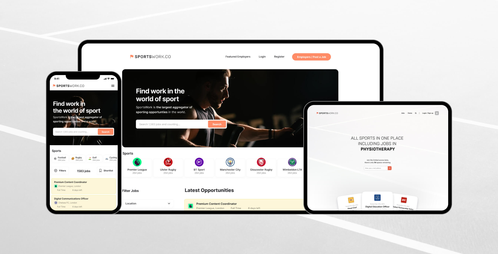

Problem Statement
The sports industry needed a centralised platform for job seekers. The challenge was to provide an effective liaison between job seekers and employers, generating sustainable revenue via partnerships and premium job postings.

Design and Implementation
Design Process
The branding strategy was focused on energy and movement, leading to the selection of electric orange as the brand's main colour. I designed a user-friendly jobs listing page, a forum discussion, homepage, campaign pages, and a partner page. I also created a streamlined job posting flow and tiered job listings to promote profitability.
User Experience and Backend Design
My design contributions extended beyond front-end, involving significant backend components like account settings, helping users to manage their listings and jobs efficiently. A major UX improvement came with the redesign of the 404 page. It was transformed into a resourceful spot with email inputs, related job suggestions, and easy navigation, significantly boosting site-wide conversions.
Implementation
Part of my role also involved CSS implementation for the site, ensuring alignment between the design vision and the final product. This included working both solo and alongside developers to style the website.
Results
The platform successfully launched, showcasing financial independence and attracting multiple investment rounds. User engagement and experience saw significant improvement over expectations, validating the effectiveness of my design decisions earlier on in the project.
Conclusion:
This project underscored the significance of user feedback in design iterations and the critical role of design in solving real-world problems, driving profitability, and enhancing user experience.